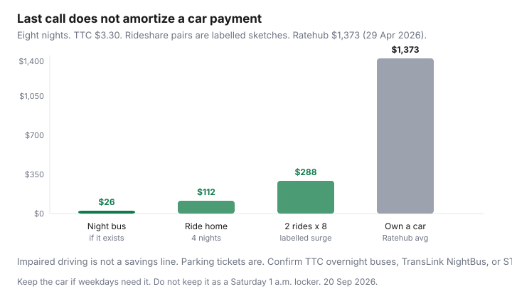

Transportation · Nights out
Rideshare vs late-night transit vs keeping a car: a Canadian city night-out cost test
People keep a car “for weekends” and then describe a Saturday that is a restaurant, a show, and a 12 a.m. ride they are not sober enough to drive. That is not a car-shaped problem. It is a last-mile after midnight problem. Uber and Lyft are expensive when they surge. They are cheap next to Ratehub’s $1,373/month blended ownership average (29 Apr 2026). Late-night transit is cheaper still when it exists on your corridor. This test prices the night — then asks whether the car has any other job.
City stacks: Toronto / Vancouver / Montréal car-lite. Daytime weekends: rental vs car-share.
Disclosure: Car-share memberships are an opportunity type. Rideshare credits are not forced. Saving Optimizer may earn a commission if we later add partner links. We do not currently claim Uber, Lyft, or operator partnerships. Fares below are labelled sketches, not quotes.
Key takeaways
- Price the pair of rides (out + home), not the $14 outbound that ignores the 1 a.m. surge.
- Parking plus a ticket risk is not “basically free.” Impaired driving is not in the comparison set.
- Late-night transit exists in pieces — TTC overnight buses, TransLink NightBus, STM night network. Confirm your last vehicle.
- Eight labelled $36 night-out pairs = $288. That does not buy a financed car. It can buy a lot of Communauto daytime hours.
- Keep the car if weekdays, kids, or a job site need it. Do not keep it as a nightclub locker on wheels.
Typical Uber/Lyft ranges vs parking and impaired-driving risk framing
Labelled 2026 city sketches — open the app on a Friday at 5 p.m. and at 12:30 a.m. before you believe a blog:
- 5 km core-to-core, off-peak: often mid-teens to low $20s before tip.
- Same trip, Friday 1 a.m. with 1.6–2.0× surge: $25–$45 is a normal ugly number, not a scandal.
- Airport or suburb-to-core: the car starts to look like a plan — until parking at the venue is $30 and you still need a sober driver home.
Parking: downtown event rates of $15–$40 are common; condos with hostile visitor lots push guests to the street. A $60 ticket (wrong zone, overnight ban) is two rideshares. Impaired driving is a legal, insurance, and moral catastrophe — it is not a line on a TCO spreadsheet. If anyone in the group is drinking, the car’s only honest job is staying parked.
Late-night transit availability by city
Service changes. Treat this as a research list, not a timetable:
- Toronto: several overnight bus corridors; subway last trains are not 24-hour on every line. PRESTO adult tap is $3.30; transfers inside two hours can cover a hop-plus-return if you are fast, which at 1 a.m. you are not. Night bus still beats a $38 surge if it exists on your street.
- Vancouver: TransLink NightBus covers a set of corridors after SkyTrain winds down. Compass stored value is the product — you will not recoup a monthly on two nights out. Confirm NightBus vs your neighbourhood; many east-west gaps remain.
- Montréal: STM night network is part of the city’s identity. Opus PAYG plus a 3 a.m. 747-style airport mindset (know the number before you go out).
- Calgary, Ottawa, Halifax, Winnipeg: late-night grids are thinner. Rideshare or a designated driver is more often the honest product. Do not import a Toronto Night Bus onto an 11:40 last suburban route.
When a car-share one-way helps
One-way (Evo in Metro Vancouver, Communauto FLEX where inventory exists) is useful when the afternoon needed a trunk and the night does not need a stall: drop the car in a home zone, walk to dinner, rideshare back if you drink. Round-trip Zipcar that sits in a lot from 6 p.m. to 2 a.m. is a $78 day plus parking anxiety — usually worse than two Ubers. Car-share is a daytime weekend tool more than a last-call tool. Never combine alcohol and a shared VIN.
Monthly night-out budget vs ownership justification
| Pattern | Night-out line | Compared with | Car “for nights”? |
|---|---|---|---|
| 4 nights, transit both ways | 8 × $3.30 ≈ $26 (if service exists) | TTC cap / Compass leftover | No |
| 4 nights, rideshare home only | 4 × ~$28 ≈ $112 plus outbound transit | Paid-off car ~$659 + insurance reality | No |
| 8 nights, two rideshares each | 8 × ~$36 ≈ $288 | Ratehub $1,373 financed average | No — unless weekdays need the car |
| 8 nights, drive + $25 parking | $200 parking + fuel + ticket risk | Same $1,373 plus legal risk if drinking | Only with a sober driver and a weekday job for the car |

Safety and reliability trade-offs
Rideshare reliability drops when it rains at 1 a.m. or when a stadium lets out. Transit reliability drops when the NightBus is every 30 minutes and you missed it. The car’s reliability is excellent until weather, theft, or a dead battery. Budget a backup: a second app, a taxi number, or a friend who is the designated driver this Saturday. Safety: share the trip, wait indoors, and do not treat a 40-minute NightBus wait as a dare in January.
Worked examples for Toronto and Vancouver
Toronto, King West to a midtown apartment, Saturday: outbound streetcar $3.30 (if you go early). Home at 1:15 a.m.: Night Bus if your corridor has one, else a labelled $30–$42 Lyft. Four such Saturdays ≈ $130–$180. Downtown stall + insurance on a car you drove to the bar is already more, before the “who is sober?” conversation.
Vancouver, Mount Pleasant to Gastown, Friday: Compass tap outbound. Home: NightBus on a documented corridor or a labelled $22–$38 ride in the rain. SkyTrain does not wait for last call on every branch. A West End stall you keep “for nights” is the car-lite guide’s parking problem in a different costume.
Montréal readers: swap in STM night buses and FLEX; the ownership number does not get nicer in French.
Decision rule for keeping a car “for nights out”
Log 90 days. If nights are the only unique job, sell the narrative and keep a rideshare/transit envelope. If the same VIN also does a 6:30 a.m. site, kids’ tournaments, or a cottage loop, the car stays — and nights out become a rideshare anyway whenever alcohol is involved. The honest luxury is a paid-off car in a free driveway plus the discipline to leave it parked on Saturday. The expensive fiction is a financed SUV whose job is a 1 a.m. driveway flex.
Night-out rule: price the ride home at surge, not the ride out at 6 p.m. If that monthly total is still under insurance + parking, the car needs a weekday résumé or an exit.
Sources & date stamps
- Ratehub, “What is the total cost of owning a car?”, 29 Apr 2026 — $1,373 blended; ~$659 non-loan lines; $200 parking placeholder.
- TTC fares — adult PRESTO $3.30; capping context 1 Sep 2026. Overnight bus corridors: confirm the live TTC map.
- TransLink NightBus / Compass — confirm corridor and last-bus times on translink.ca.
- Uber/Lyft ranges — labelled sketches; open the app for your hour and neighbourhood.
Frequently asked questions
Is keeping a car just for weekend nights cheaper than Uber in Canada?
Almost never if that is the car’s only job. Eight nights at a labelled $36 rideshare pair is $288. Ratehub’s 2026 blended ownership average is $1,373/month. A paid-off car in a free driveway is closer to ~$659 plus your insurance — still usually more than nights out plus a transit pass.
What about parking and impaired driving?
Parking is a cash line ($15–$40 downtown is common on event nights). Driving after drinking is not a savings strategy — it is a legal and safety failure. The comparison is rideshare or transit versus a sober designated driver you already have, not versus ‘I’ll risk it.’
Does late-night transit actually run in Canadian cities?
Toronto has overnight buses on several corridors; the subway is not 24/7 on every line. Metro Vancouver has a NightBus network. Montréal has a night bus réseau. Confirm the last vehicle on your corridor for that day of week — Saturday is not Tuesday. This is not a live service board.
When does one-way car-share help?
When you need a trunk at 4 p.m. and not a parking stall at 1 a.m. — IKEA-then-Uber-home is a different night than last call. Evo (Vancouver) and Communauto FLEX (stronger in Montréal than Toronto) are the products to price. Do not drink and car-share either.
How should I decide whether the car is ‘for nights out’?
Add up 90 days of actual nights: rideshare, transit, parking, tickets. If that number is still a fraction of insurance + parking + fuel, the car is a lifestyle subscription. Keep it if weekdays also need it.